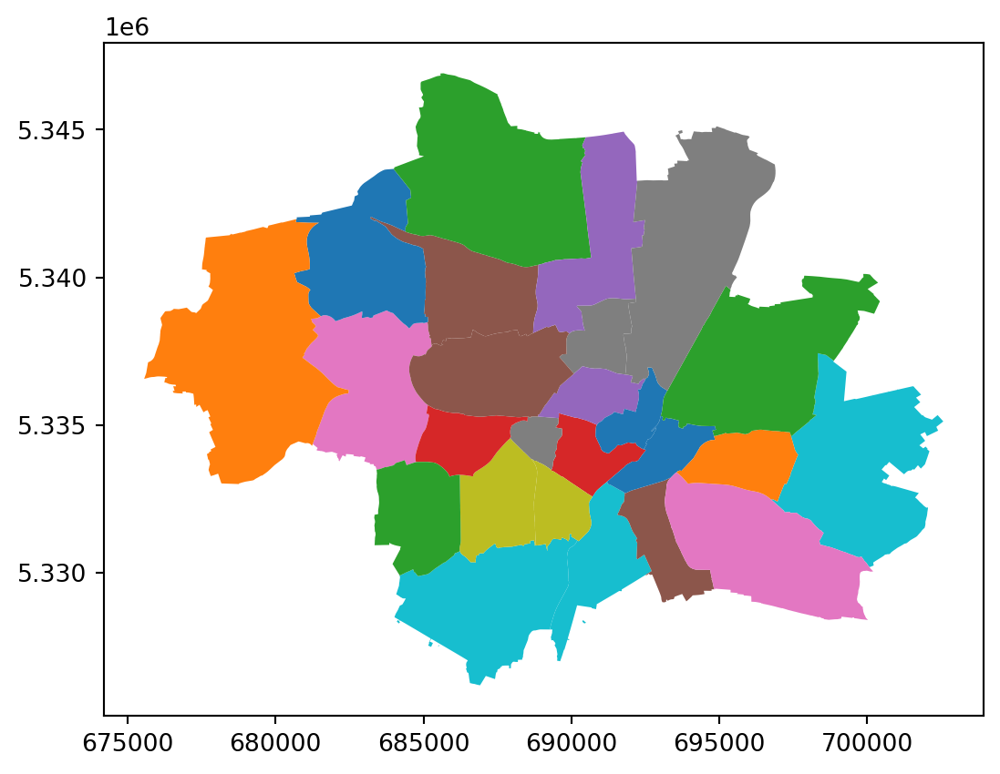
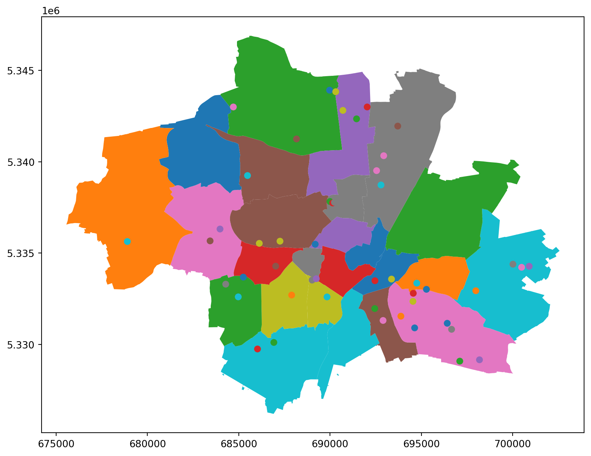
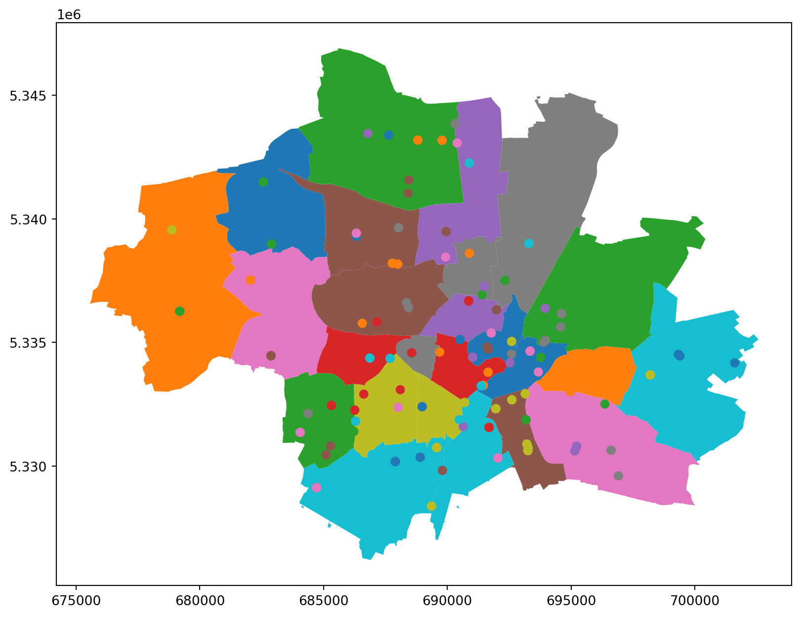
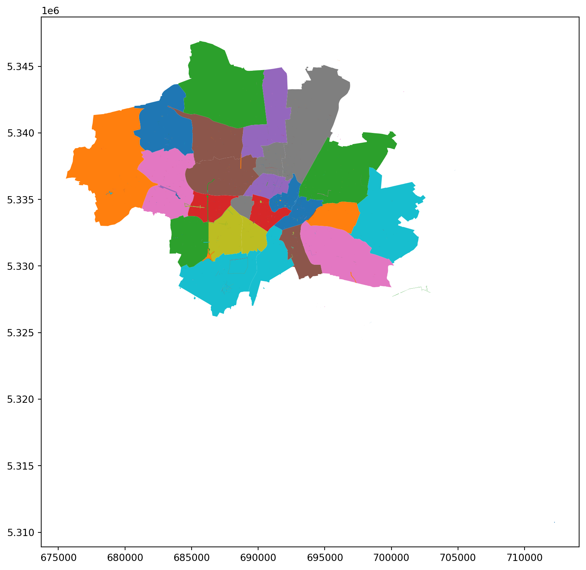
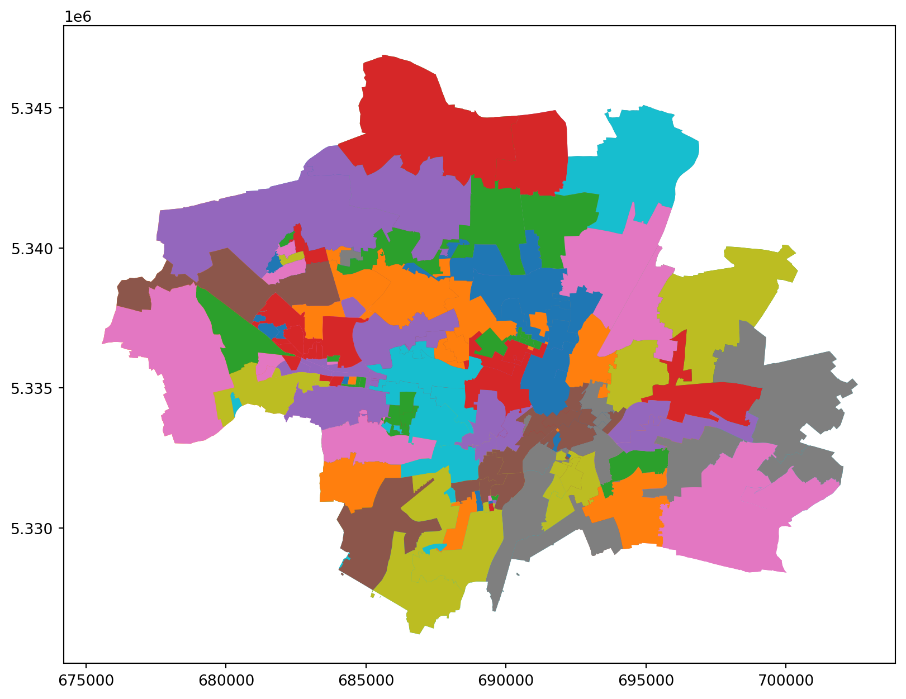

import json
import pandas as pd
import geopandas as gpd
import matplotlib.pyplot as plt
def load_geojson(path):
"""
Docstring for load_geojson
"""
with open(path, "r", encoding="utf-8") as f:
data = json.load(f)
return data
def convert_to_geodataframe(data):
"""
Docstring for convert_to_geodataframe
"""
gdf = gpd.GeoDataFrame.from_features(data["features"])
return gdf
def point_in_polygon(point, polygon):
"""
Docstring for point_in_polygon
"""
return polygon.contains(point)
def plot_gdfs(gdfs, columns):
"""
Plot multiple GeoDataFrames on the same plot, optionally coloring by a specified column.
"""
fig, ax = plt.subplots(figsize=(10, 10))
for gdf, column in zip(gdfs, columns):
gdf.plot(ax=ax, column=column, legend=False)
plt.show()
def map_polygons_to_points(districts_gdf, points_gdf):
"""
Map each neighbourhood to its corresponding district based on spatial containment.
"""
for _, p in points_gdf.iterrows():
for _, district in districts_gdf.iterrows():
try:
if point_in_polygon(p["geometry"], district["geometry"]):
points_gdf.loc[p.name, "sb_name"] = district["sb_name"]
break
except Exception as e:
print(f"Error processing point {p.name} and district {district['sb_name']}: {e}")
return points_gdf
def rank_districts(districts_gdf, points_path, column="adresse"):
"""
Rank districts based on the number of neighbourhoods they contain.
"""
points_data = load_geojson(points_path)
points_gdf = convert_to_geodataframe(points_data)
points_gdf = map_polygons_to_points(districts_gdf, points_gdf)
points_gdf = points_gdf.merge(districts_gdf[["sb_name", "bevölkerung"]], on="sb_name", how="left")
plot_gdfs([districts_gdf, points_gdf], columns=["sb_name", column])
out = points_gdf.groupby(["sb_name", "bevölkerung"]).size().reset_index(name="count")
out["count_pp"] = out["count"] / out["bevölkerung"]
return out.sort_values("count_pp", ascending=False)Munich Rankings
Die Münchner Stadtbezirke
districts_data = load_geojson("data/districts.geojson")
districts_population = pd.read_csv("data/districts_population.csv")
districts_population[["bevölkerung"]] = districts_population[["bevölkerung"]].replace({"[, .]": ""}, regex=True).astype(int)
districts_gdf = convert_to_geodataframe(districts_data)
districts_gdf["sb_nummer"] = districts_gdf["sb_nummer"].astype(int)
districts_gdf = districts_gdf.merge(districts_population, left_on="sb_nummer", right_on="stadtbezirksnummer")
districts_gdf.plot(column="sb_name", legend=False)
districts_gdf| geometry | sb_nummer | sb_name | flaeche_qm | stadtbezirksnummer | stadtbezirk | bevölkerung | bevölkerung in prozent | fläche in ha | fläche in prozent | einwohnerdichte | |
|---|---|---|---|---|---|---|---|---|---|---|---|
| 0 | POLYGON ((691821.837 5339259.125, 691767.291 5... | 4 | Schwabing-West | 4.363287e+06 | 4 | Schwabing West | 68610 | 4.3 | 436.33 | 1.4 | 157 |
| 1 | POLYGON ((685540.466 5327534.649, 685543.41 53... | 19 | Thalkirchen-Obersendling-Forstenried-Fürstenri... | 1.776349e+07 | 19 | Thalkirchen - Obersendling - Forstenried - Für... | 103717 | 6.5 | 1776.35 | 5.7 | 58 |
| 2 | POLYGON ((689968.496 5331316.396, 689963.03 53... | 19 | Thalkirchen-Obersendling-Forstenried-Fürstenri... | 1.776349e+07 | 19 | Thalkirchen - Obersendling - Forstenried - Für... | 103717 | 6.5 | 1776.35 | 5.7 | 58 |
| 3 | POLYGON ((698523.625 5337387.299, 698428.438 5... | 15 | Trudering-Riem | 2.245392e+07 | 15 | Trudering - Riem | 76280 | 4.8 | 2245.39 | 7.2 | 34 |
| 4 | POLYGON ((682919.357 5338681.106, 682929.131 5... | 21 | Pasing-Obermenzing | 1.649754e+07 | 21 | Pasing - Obermenzing | 81804 | 5.1 | 1649.75 | 5.3 | 50 |
| 5 | POLYGON ((689722.841 5335359.37, 689570.385 53... | 2 | Ludwigsvorstadt-Isarvorstadt | 4.401651e+06 | 2 | Ludwigsvorstadt - Isarvorstadt | 50081 | 3.1 | 440.17 | 1.4 | 114 |
| 6 | POLYGON ((683486.613 5341924.198, 683481.27 53... | 10 | Moosach | 1.109367e+07 | 10 | Moosach | 56015 | 3.5 | 1109.37 | 3.6 | 50 |
| 7 | POLYGON ((684558.078 5342934.959, 684558.412 5... | 23 | Allach-Untermenzing | 1.545119e+07 | 23 | Allach - Untermenzing | 36230 | 2.3 | 1545.12 | 5.0 | 23 |
| 8 | POLYGON ((687534.976 5346097.716, 687507.106 5... | 24 | Feldmoching-Hasenbergl | 2.893845e+07 | 24 | Feldmoching - Hasenbergl | 63756 | 4.0 | 2893.85 | 9.3 | 22 |
| 9 | POLYGON ((690447.74 5328289.784, 690497.261 53... | 18 | Untergiesing-Harlaching | 8.057218e+06 | 18 | Untergiesing - Harlaching | 54067 | 3.4 | 805.72 | 2.6 | 67 |
| 10 | POLYGON ((691220.643 5333055.074, 691217.702 5... | 18 | Untergiesing-Harlaching | 8.057218e+06 | 18 | Untergiesing - Harlaching | 54067 | 3.4 | 805.72 | 2.6 | 67 |
| 11 | POLYGON ((687931.605 5334552.238, 687876.365 5... | 7 | Sendling-Westpark | 7.814853e+06 | 7 | Sendling - Westpark | 62240 | 3.9 | 781.49 | 2.5 | 80 |
| 12 | POLYGON ((689091.353 5335270.96, 688991.703 53... | 8 | Schwanthalerhöhe | 2.070313e+06 | 8 | Schwanthalerhöhe | 28684 | 1.8 | 207.03 | 0.7 | 139 |
| 13 | POLYGON ((690674.877 5336921.715, 690657.282 5... | 3 | Maxvorstadt | 4.298192e+06 | 3 | Maxvorstadt | 52434 | 3.3 | 429.82 | 1.4 | 122 |
| 14 | POLYGON ((688743.237 5333793.444, 688732.857 5... | 6 | Sendling | 3.938932e+06 | 6 | Sendling | 41002 | 2.6 | 393.89 | 1.3 | 104 |
| 15 | POLYGON ((693335.361 5333190.039, 693336.169 5... | 17 | Obergiesing-Fasangarten | 5.720866e+06 | 17 | Obergiesing - Fasangarten | 54352 | 3.4 | 572.09 | 1.8 | 95 |
| 16 | POLYGON ((693021.981 5335306.773, 693021.084 5... | 5 | Au-Haidhausen | 4.219983e+06 | 5 | Au - Haidhausen | 63972 | 4.0 | 422.00 | 1.4 | 152 |
| 17 | POLYGON ((693542.885 5333396.806, 693542.516 5... | 16 | Ramersdorf-Perlach | 1.989714e+07 | 16 | Ramersdorf - Perlach | 120776 | 7.5 | 1989.71 | 6.4 | 61 |
| 18 | POLYGON ((685647.268 5335476.679, 685606.425 5... | 25 | Laim | 5.286015e+06 | 25 | Laim | 57116 | 3.6 | 528.60 | 1.7 | 108 |
| 19 | POLYGON ((692704.77 5336941.154, 692682.921 53... | 1 | Altstadt-Lehel | 3.145888e+06 | 1 | Altstadt - Lehel | 20876 | 1.3 | 314.59 | 1.0 | 66 |
| 20 | POLYGON ((696816.489 5334799.183, 696798.794 5... | 14 | Berg am Laim | 6.315331e+06 | 14 | Berg am Laim | 47367 | 3.0 | 631.53 | 2.0 | 75 |
| 21 | POLYGON ((680687.912 5341888.997, 680691.947 5... | 22 | Aubing-Lochhausen-Langwied | 3.405732e+07 | 22 | Aubing - Lochhausen - Langwied | 61011 | 3.8 | 3405.73 | 11.0 | 18 |
| 22 | POLYGON ((684377.103 5333780.185, 684366.74 53... | 20 | Hadern | 9.223789e+06 | 20 | Hadern | 51637 | 3.2 | 922.38 | 3.0 | 56 |
| 23 | POLYGON ((700340.626 5339842.572, 700309.859 5... | 13 | Bogenhausen | 2.371296e+07 | 13 | Bogenhausen | 95475 | 6.0 | 2371.30 | 7.6 | 40 |
| 24 | POLYGON ((689485.672 5338343.264, 689471.049 5... | 9 | Neuhausen-Nymphenburg | 1.291486e+07 | 9 | Neuhausen - Nymphenburg | 101901 | 6.4 | 1291.49 | 4.2 | 79 |
| 25 | POLYGON ((692143.6 5344442.981, 692137.357 534... | 11 | Milbertshofen-Am Hart | 1.341721e+07 | 11 | Milbertshofen - Am Hart | 77281 | 4.8 | 1341.72 | 4.3 | 58 |
| 26 | POLYGON ((694974.912 5345089.521, 694907.447 5... | 12 | Schwabing-Freimann | 2.567477e+07 | 12 | Schwabing - Freimann | 77092 | 4.8 | 2567.48 | 8.3 | 30 |

Nachbarschaftstreffs
rank_districts(districts_gdf, "data/neighbourhoods.geojson", column="st2")
| sb_name | bevölkerung | count | count_pp | |
|---|---|---|---|---|
| 13 | Ramersdorf-Perlach | 120776 | 10 | 0.000083 |
| 2 | Berg am Laim | 47367 | 3 | 0.000063 |
| 3 | Feldmoching-Hasenbergl | 63756 | 4 | 0.000063 |
| 4 | Hadern | 51637 | 3 | 0.000058 |
| 20 | Trudering-Riem | 76280 | 4 | 0.000052 |
| 14 | Schwabing-Freimann | 77092 | 4 | 0.000052 |
| 8 | Milbertshofen-Am Hart | 77281 | 4 | 0.000052 |
| 17 | Sendling | 41002 | 2 | 0.000049 |
| 15 | Schwabing-West | 68610 | 3 | 0.000044 |
| 19 | Thalkirchen-Obersendling-Forstenried-Fürstenri... | 103717 | 4 | 0.000039 |
| 11 | Obergiesing-Fasangarten | 54352 | 2 | 0.000037 |
| 9 | Moosach | 56015 | 2 | 0.000036 |
| 16 | Schwanthalerhöhe | 28684 | 1 | 0.000035 |
| 0 | Au-Haidhausen | 63972 | 2 | 0.000031 |
| 12 | Pasing-Obermenzing | 81804 | 2 | 0.000024 |
| 6 | Ludwigsvorstadt-Isarvorstadt | 50081 | 1 | 0.000020 |
| 10 | Neuhausen-Nymphenburg | 101901 | 2 | 0.000020 |
| 7 | Maxvorstadt | 52434 | 1 | 0.000019 |
| 5 | Laim | 57116 | 1 | 0.000018 |
| 1 | Aubing-Lochhausen-Langwied | 61011 | 1 | 0.000016 |
| 18 | Sendling-Westpark | 62240 | 1 | 0.000016 |
Öffentlichen Toiletten
rank_districts(districts_gdf, "data/wc_finder_opendata.geojson", column="strasse")
| sb_name | bevölkerung | count | count_pp | |
|---|---|---|---|---|
| 1 | Altstadt-Lehel | 20876.0 | 17 | 0.000814 |
| 24 | Untergiesing-Harlaching | 54067.0 | 26 | 0.000481 |
| 14 | Obergiesing-Fasangarten | 54352.0 | 22 | 0.000405 |
| 20 | Sendling | 41002.0 | 15 | 0.000366 |
| 9 | Ludwigsvorstadt-Isarvorstadt | 50081.0 | 18 | 0.000359 |
| 7 | Hadern | 51637.0 | 18 | 0.000349 |
| 22 | Thalkirchen-Obersendling-Forstenried-Fürstenri... | 103717.0 | 36 | 0.000347 |
| 11 | Milbertshofen-Am Hart | 77281.0 | 18 | 0.000233 |
| 6 | Feldmoching-Hasenbergl | 63756.0 | 14 | 0.000220 |
| 2 | Au-Haidhausen | 63972.0 | 14 | 0.000219 |
| 21 | Sendling-Westpark | 62240.0 | 13 | 0.000209 |
| 18 | Schwabing-West | 68610.0 | 13 | 0.000189 |
| 23 | Trudering-Riem | 76280.0 | 14 | 0.000184 |
| 12 | Moosach | 56015.0 | 10 | 0.000179 |
| 8 | Laim | 57116.0 | 10 | 0.000175 |
| 10 | Maxvorstadt | 52434.0 | 8 | 0.000153 |
| 5 | Bogenhausen | 95475.0 | 13 | 0.000136 |
| 0 | Allach-Untermenzing | 36230.0 | 4 | 0.000110 |
| 4 | Berg am Laim | 47367.0 | 5 | 0.000106 |
| 19 | Schwanthalerhöhe | 28684.0 | 3 | 0.000105 |
| 16 | Ramersdorf-Perlach | 120776.0 | 12 | 0.000099 |
| 3 | Aubing-Lochhausen-Langwied | 61011.0 | 6 | 0.000098 |
| 13 | Neuhausen-Nymphenburg | 101901.0 | 9 | 0.000088 |
| 17 | Schwabing-Freimann | 77092.0 | 6 | 0.000078 |
| 15 | Pasing-Obermenzing | 81804.0 | 5 | 0.000061 |
Märkte
rank_districts(districts_gdf, "data/markets.geojson", column="adresse")| sb_name | bevölkerung | count | count_pp | |
|---|---|---|---|---|
| 20 | Sendling | 41002 | 6 | 0.000146 |
| 1 | Altstadt-Lehel | 20876 | 3 | 0.000144 |
| 22 | Thalkirchen-Obersendling-Forstenried-Fürstenri... | 103717 | 8 | 0.000077 |
| 24 | Untergiesing-Harlaching | 54067 | 4 | 0.000074 |
| 2 | Au-Haidhausen | 63972 | 4 | 0.000063 |
| 7 | Hadern | 51637 | 3 | 0.000058 |
| 10 | Maxvorstadt | 52434 | 3 | 0.000057 |
| 6 | Feldmoching-Hasenbergl | 63756 | 3 | 0.000047 |
| 17 | Schwabing-Freimann | 77092 | 3 | 0.000039 |
| 14 | Obergiesing-Fasangarten | 54352 | 2 | 0.000037 |
| 19 | Schwanthalerhöhe | 28684 | 1 | 0.000035 |
| 3 | Aubing-Lochhausen-Langwied | 61011 | 2 | 0.000033 |
| 18 | Schwabing-West | 68610 | 2 | 0.000029 |
| 0 | Allach-Untermenzing | 36230 | 1 | 0.000028 |
| 23 | Trudering-Riem | 76280 | 2 | 0.000026 |
| 15 | Pasing-Obermenzing | 81804 | 2 | 0.000024 |
| 4 | Berg am Laim | 47367 | 1 | 0.000021 |
| 5 | Bogenhausen | 95475 | 2 | 0.000021 |
| 9 | Ludwigsvorstadt-Isarvorstadt | 50081 | 1 | 0.000020 |
| 12 | Moosach | 56015 | 1 | 0.000018 |
| 8 | Laim | 57116 | 1 | 0.000018 |
| 16 | Ramersdorf-Perlach | 120776 | 2 | 0.000017 |
| 21 | Sendling-Westpark | 62240 | 1 | 0.000016 |
| 11 | Milbertshofen-Am Hart | 77281 | 1 | 0.000013 |
| 13 | Neuhausen-Nymphenburg | 101901 | 1 | 0.000010 |
Baustellen
rank_districts(districts_gdf, "data/baustellen_opendata.geojson", column="strasse_hausnr")Error processing point 226 and district Ludwigsvorstadt-Isarvorstadt: TopologyException: side location conflict at 692201.38959862757 5334920.3457127875. This can occur if the input geometry is invalid.
Error processing point 226 and district Au-Haidhausen: TopologyException: side location conflict at 692201.38959862757 5334920.3457127875. This can occur if the input geometry is invalid.
Error processing point 226 and district Altstadt-Lehel: TopologyException: side location conflict at 692201.38959862757 5334920.3457127875. This can occur if the input geometry is invalid.
Error processing point 227 and district Ludwigsvorstadt-Isarvorstadt: TopologyException: side location conflict at 692201.38959862757 5334920.3457127875. This can occur if the input geometry is invalid.
Error processing point 227 and district Au-Haidhausen: TopologyException: side location conflict at 692201.38959862757 5334920.3457127875. This can occur if the input geometry is invalid.
Error processing point 227 and district Altstadt-Lehel: TopologyException: side location conflict at 692201.38959862757 5334920.3457127875. This can occur if the input geometry is invalid.
Error processing point 228 and district Ludwigsvorstadt-Isarvorstadt: TopologyException: side location conflict at 692201.38959862757 5334920.3457127875. This can occur if the input geometry is invalid.
Error processing point 228 and district Au-Haidhausen: TopologyException: side location conflict at 692201.38959862757 5334920.3457127875. This can occur if the input geometry is invalid.
Error processing point 228 and district Altstadt-Lehel: TopologyException: side location conflict at 692201.38959862757 5334920.3457127875. This can occur if the input geometry is invalid.
Error processing point 4570 and district Maxvorstadt: TopologyException: side location conflict at 691718.60694125562 5335500.340057225. This can occur if the input geometry is invalid.
Error processing point 4570 and district Altstadt-Lehel: TopologyException: side location conflict at 691718.60694125562 5335500.340057225. This can occur if the input geometry is invalid.
Error processing point 4571 and district Maxvorstadt: TopologyException: side location conflict at 691718.60694125562 5335500.340057225. This can occur if the input geometry is invalid.
Error processing point 4571 and district Altstadt-Lehel: TopologyException: side location conflict at 691718.60694125562 5335500.340057225. This can occur if the input geometry is invalid.
Error processing point 4573 and district Maxvorstadt: TopologyException: side location conflict at 691718.60694125562 5335500.340057225. This can occur if the input geometry is invalid.
Error processing point 4573 and district Altstadt-Lehel: TopologyException: side location conflict at 691718.60694125562 5335500.340057225. This can occur if the input geometry is invalid.
Error processing point 4578 and district Maxvorstadt: TopologyException: side location conflict at 691718.60694125562 5335500.340057225. This can occur if the input geometry is invalid.
Error processing point 4578 and district Altstadt-Lehel: TopologyException: side location conflict at 691718.60694125562 5335500.340057225. This can occur if the input geometry is invalid.
Error processing point 4587 and district Maxvorstadt: TopologyException: side location conflict at 691718.60694125562 5335500.340057225. This can occur if the input geometry is invalid.
Error processing point 4587 and district Altstadt-Lehel: TopologyException: side location conflict at 691718.60694125562 5335500.340057225. This can occur if the input geometry is invalid.
| sb_name | bevölkerung | count | count_pp | |
|---|---|---|---|---|
| 1 | Altstadt-Lehel | 20876.0 | 388 | 0.018586 |
| 10 | Maxvorstadt | 52434.0 | 373 | 0.007114 |
| 9 | Ludwigsvorstadt-Isarvorstadt | 50081.0 | 322 | 0.006430 |
| 22 | Thalkirchen-Obersendling-Forstenried-Fürstenri... | 103717.0 | 490 | 0.004724 |
| 8 | Laim | 57116.0 | 257 | 0.004500 |
| 2 | Au-Haidhausen | 63972.0 | 236 | 0.003689 |
| 17 | Schwabing-Freimann | 77092.0 | 274 | 0.003554 |
| 18 | Schwabing-West | 68610.0 | 243 | 0.003542 |
| 13 | Neuhausen-Nymphenburg | 101901.0 | 344 | 0.003376 |
| 0 | Allach-Untermenzing | 36230.0 | 121 | 0.003340 |
| 24 | Untergiesing-Harlaching | 54067.0 | 170 | 0.003144 |
| 15 | Pasing-Obermenzing | 81804.0 | 256 | 0.003129 |
| 5 | Bogenhausen | 95475.0 | 237 | 0.002482 |
| 7 | Hadern | 51637.0 | 121 | 0.002343 |
| 21 | Sendling-Westpark | 62240.0 | 132 | 0.002121 |
| 11 | Milbertshofen-Am Hart | 77281.0 | 135 | 0.001747 |
| 19 | Schwanthalerhöhe | 28684.0 | 50 | 0.001743 |
| 14 | Obergiesing-Fasangarten | 54352.0 | 91 | 0.001674 |
| 4 | Berg am Laim | 47367.0 | 75 | 0.001583 |
| 3 | Aubing-Lochhausen-Langwied | 61011.0 | 93 | 0.001524 |
| 23 | Trudering-Riem | 76280.0 | 109 | 0.001429 |
| 12 | Moosach | 56015.0 | 74 | 0.001321 |
| 20 | Sendling | 41002.0 | 54 | 0.001317 |
| 6 | Feldmoching-Hasenbergl | 63756.0 | 65 | 0.001020 |
| 16 | Ramersdorf-Perlach | 120776.0 | 112 | 0.000927 |
Zuständige Kaminkehrer
rank_districts(districts_gdf, "data/kaminkehrer.geojson", column="kehrbezirk")
| sb_name | bevölkerung | count | count_pp | |
|---|---|---|---|---|
| 9 | Pasing-Obermenzing | 81804.0 | 19 | 0.000232 |
| 0 | Allach-Untermenzing | 36230.0 | 8 | 0.000221 |
| 12 | Thalkirchen-Obersendling-Forstenried-Fürstenri... | 103717.0 | 14 | 0.000135 |
| 5 | Maxvorstadt | 52434.0 | 5 | 0.000095 |
| 8 | Obergiesing-Fasangarten | 54352.0 | 4 | 0.000074 |
| 7 | Neuhausen-Nymphenburg | 101901.0 | 7 | 0.000069 |
| 1 | Au-Haidhausen | 63972.0 | 4 | 0.000063 |
| 3 | Laim | 57116.0 | 3 | 0.000053 |
| 13 | Untergiesing-Harlaching | 54067.0 | 2 | 0.000037 |
| 6 | Moosach | 56015.0 | 2 | 0.000036 |
| 4 | Ludwigsvorstadt-Isarvorstadt | 50081.0 | 1 | 0.000020 |
| 11 | Schwabing-West | 68610.0 | 1 | 0.000015 |
| 2 | Bogenhausen | 95475.0 | 1 | 0.000010 |
| 10 | Ramersdorf-Perlach | 120776.0 | 1 | 0.000008 |